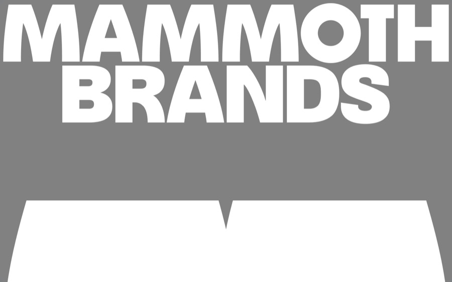
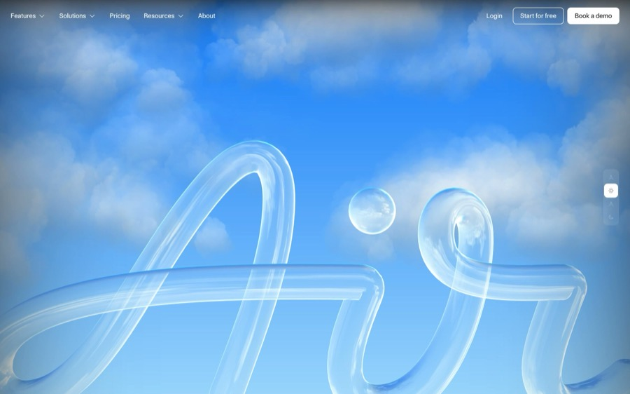
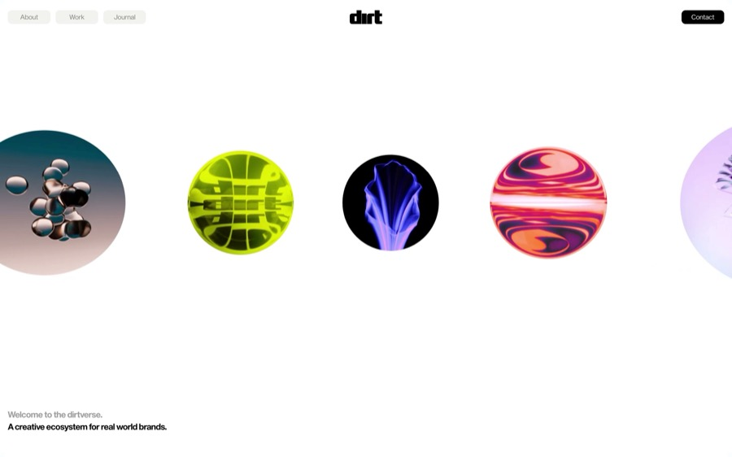
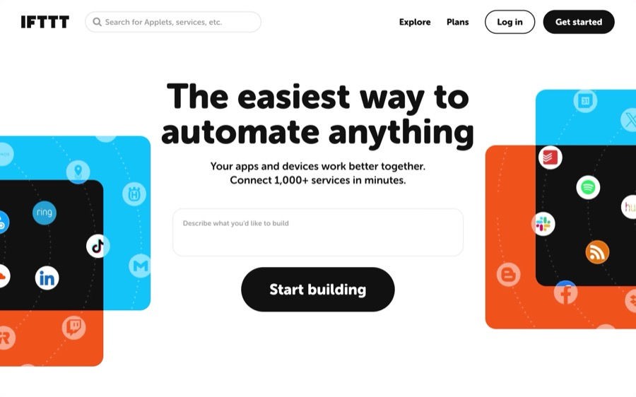
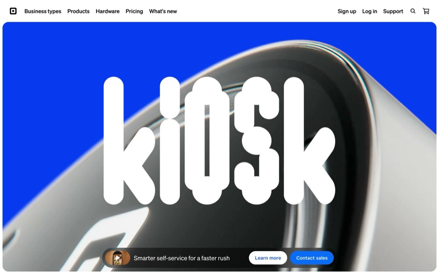

Bunny World · landing · Refero sheet · 2026-11-15
Five references for a landing that opens on the logo. Each one gives a single trait, rebuilt in Bunny World's own ink, cream and carrot with Gabarito. Nothing gets copied whole. Your split rule still holds: what stays still carries the trust, and the brief moments carry the fun.

The identity at monumental scale.
The mark is the first thing you see and fills the opening screen. It doesn't sit as a small badge in the nav.
refero style · monumental humanism

A logo that lives in light.
The mark sits in an open sky, with soft light behind the globe. It's a world, not a flat logo on a page.
refero style · work in wonderland

One chrome object on a quiet stage.
A plain, near-admin shell lets one shiny object do the performing. For us that's a single light sweep across the globe, our disco ball.
refero style · chrome and creative worlds

Heavy rounded type, big pill actions.
Chunky and friendly, but it reads at a glance. Keeps the trust layer simple: one dark pill and plain words.
refero style · chunky connected color

Commercial confidence, mono labels.
Big gestures up top, then calm prices in small mono labels. For local owners who want to see what it costs.
refero style · commercial theatre, editorial soul